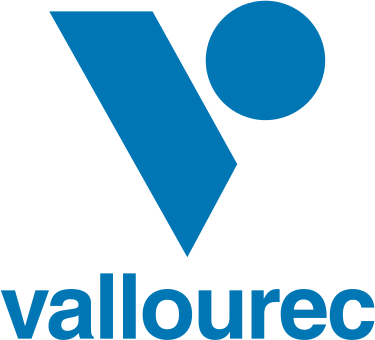
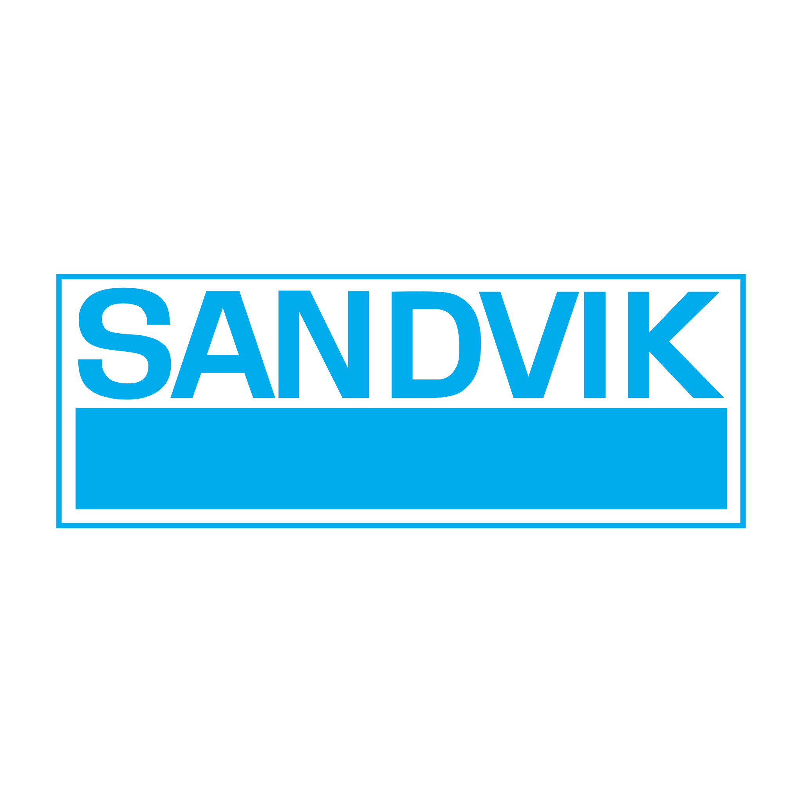

خدمات واردات تجهیزات صنعتی
پیشرو تجهیز فرتاک فرآیند کامل واردات تجهیزات صنعتی را از سورسینگ تا ترخیص گمرکی و تحویل مستند مدیریت میکند. دسترسی مستقیم به سازندگان، آشنایی با اینکوترمز و کدهای HS، و کنترل مدارک، ریسک واردات پروژهای را کاهش میدهد.
دامنه خدمات واردات
سورسینگ
- شناسایی سازندگان معتبر مطابق Vendor List
- دریافت پیشفاکتور رسمی و مقایسه فنی
- مذاکره قیمت و شرایط پرداخت (LC / TT)
حمل و ترخیص
- حمل بینالمللی دریایی، هوایی و زمینی
- ترخیص گمرکی با کد HS صحیح
- مدیریت مجوزها و استانداردهای اجباری
تحویل مستند
- MTC، COC و گواهی مبدا
- بستهبندی استاندارد صادراتی
- تحویل به انبار پروژه با Packing List
برندهای قابل سورسینگ




چرا پیشرو تجهیز فرتاک؟
- دسترسی مستقیم به سازنده: حذف واسطههای غیرضروری.
- کنترل مدارک: جلوگیری از توقف در گمرک.
- مدیریت اینکوترمز: انتخاب FOB/CIF بهینه.
- تحویل زمانبندیشده: هماهنگ با برنامه پروژه.
صنایع تحت پوشش
نفت و گاز
واردات لوله و شیرآلات
پتروشیمی
واردات تجهیزات فرایندی
نیروگاهی
واردات قطعات توربین
فولاد
واردات تجهیزات خط تولید
جدول انتخاب اینکوترمز و روش پرداخت در واردات صنعتی
در واردات تجهیزات صنعتی، انتخاب اینکوترمز و روش پرداخت باید با ریسک پروژه، ارزش کالا و شناخت فروشنده همخوان باشد. جدول راهنما:
| اینکوترمز | نقطه انتقال ریسک | مناسب برای | ریسک خریدار |
|---|---|---|---|
| EXW (Ex Works) | در محل فروشنده | خریدار با تیم لجستیک قوی | بالا — کل حمل/ترخیص بر عهدهٔ اوست |
| FOB (Free On Board) | روی کشتی در بندر مبدا | تجهیزات با حمل دریایی، خریدار مسلط به کراساستافینگ | متوسط — حمل بینالمللی و ترخیص با خریدار |
| CIF (Cost, Insurance & Freight) | روی کشتی در مبدا (ریسک)؛ بیمه/کرایه تا مقصد | پروژههایی که فروشنده کرایه و بیمه را میگیرد | متوسط — ریسک از مبدا منتقل میشود اما کرایه تا مقصد با فروشنده |
| CIP (Carriage and Insurance Paid To) | به اولین کریر در مبدا | حمل چندوجهی (دریا+کامیون)، کانتینری | متوسط — پوشش بیمه تا مقصد |
| DAP / DPU (Delivered At Place / Unloaded) | در محل پروژه | پروژههای EPC که تحویل در سایت میخواهند | پایین برای خریدار — ولی ترخیص و عوارض بسته به شرط |
نکته فنی-تجاری: در تجهیزات با ارزش بالا و Long-Lead، معمولاً ۳۰٪ پیشپرداخت با ضمانتنامهٔ بانکی (Advance Payment Bond)، ۶۰٪ در برابر اسناد حمل (B/L) و ۱۰٪ پس از پذیرش در سایت پرداخت میشود. هرگز برای تامینکنندهٔ ناآشنا ۱۰۰٪ پیش پرداخت نکنید.
راهنمای ترخیص و مستندات گمرکی تجهیزات صنعتی
تاخیر در ترخیص، میتواند کل زمانبندی پروژه را از مسیر بحرانی خارج کند. مستندات و کنترلهای کلیدی:
- طبقهبندی HS/کد تعرفه: قبل از سفارش، کد تعرفهٔ دقیق هر قلم را با کارشناس گمرک و فروشنده تطبیق دهید — اشتباه در کد، هزینهٔ گمرک و تاخیر ایجاد میکند.
- کاتالوگ و دیتاشیت: باید با مشخصات فاکتور و Packing List یکسان باشد؛ گمرک برای تشخیص تعرفه به آن استناد میکند.
- گواهی مبدا (Certificate of Origin): برای بهرهگیری از توافقنامههای تجاری الزامی است.
- استانداردهای اجباری (COI/COC): برخی تجهیزات (وسایل فشار، الکتریکی) نیاز به تأیید استاندارد واردات دارند؛ قبل از حمل نهایی شدن بررسی شود.
- بستهبندی صادراتی (Export Packing): چوب باید ISPM-15 (گواهی ضدعفونی/Phytosanitary) داشته باشد؛ در غیر این صورت در گمرک ایران برگشت یا هزینه اضافه دارد.
- بیمهٔ حمل: پوشش بیمه باید کل مسیر از انبار فروشنده تا سایت را شامل شود (Warehouse-to-Warehouse)؛ نه فقط مسیر دریایی.
- ثبت سفارش و تخصیص ارز: برای محمولههای رسمی، فرایند ثبت سفارش و تامین ارز باید پیش از حمل نهایی شده باشد.
برای واردات بدون غافلگیری: قبل از نهایی کردن PO، کد HS، شرایط استاندارد اجباری، در دسترس بودن مجوزها و زمان لجستیک واقعی (با احتساب شناور و ترخیص) را به تایملاین پروژه اضافه کنید.
راهنماهای مرتبط
پرسشهای متداول
فرآیند واردات تجهیزات صنعتی چگونه است؟
پس از دریافت استعلام، سورسینگ از سازنده معتبر انجام میشود؛ سپس حمل، ترخیص گمرکی و تحویل مستند به پروژه صورت میگیرد.
آیا واردات مطابق Vendor List انجام میشود؟
بله، واردات از برندهای تاییدشده Vendor List پروژه انجام میشود.
چه مدارکی برای ترخیص لازم است؟
فاکتور رسمی، Packing List، گواهی مبدا، MTC/COC و مجوزهای مربوطه که توسط تیم ما مدیریت میشود.
شرایط پرداخت واردات چگونه است؟
اعتبار اسنادی (LC) یا حواله (TT) بر اساس توافق با سازنده و شرایط پروژه قابل استفاده است.
استعلام واردات تجهیزات صنعتی
فهرست اقلام، مبدا و Vendor List را ثبت کنید تا تیم بازرگانی ما پیشنهاد فنی و شرایط تجاری ارائه دهد.
ثبت استعلام هوشمند (RFQ) ←